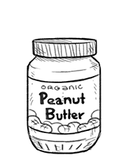

peanut butter
A spread made from dry-roasted peanuts, kinds without added sugar or oils are preferable. Peanut butter is a rich source of protein.
The flavor of peanut butter combines well with other flavors, such as oatmeal, savory sauces, and various types of breads and crackers.
It's possible to make your own peanut butter, all you need is raw shelled peanuts and a food processor/blender. First, you should roast the peanuts at 350F for 10 minutes, then transfer them to a food processor with some salt and blend, you'll need to stop often to scrape the sides and bottom. After a few minutes, it'll get smoother as you go. Add the salt near the end. For a smoother peanut butter, you can add peanut oil.
Weight: 1/2 cup | 4 3/4 oz | 135 g
peanuts
A crop grown mainly for its edible seeds! Peanuts are similar in taste and nutritional profile to tree nuts, and can be made into peanut butter. Peanuts are are rich source of protein, 1/4 cup of peanuts equals one serving of the 3-4 servings of protein required for good health.